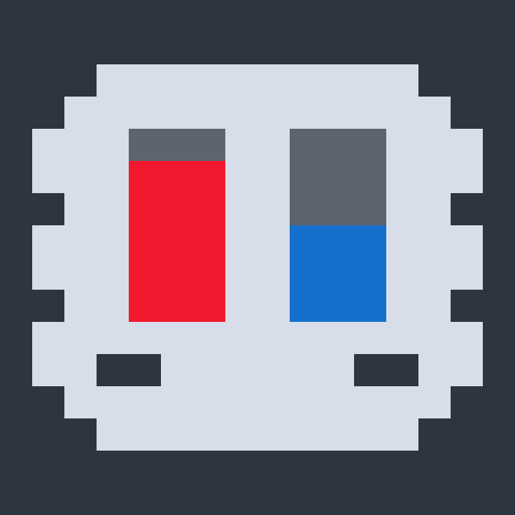
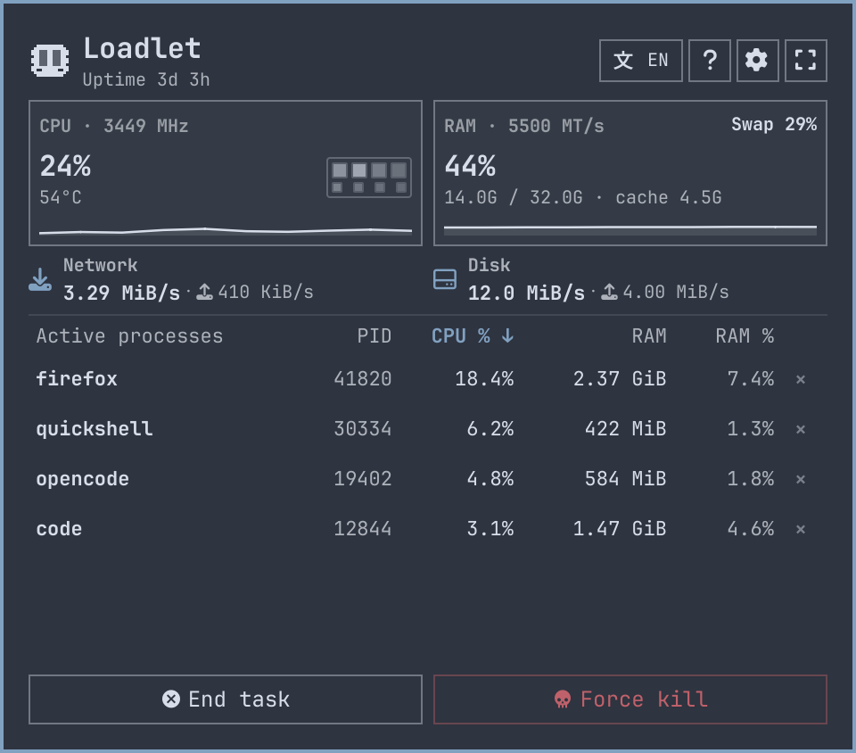
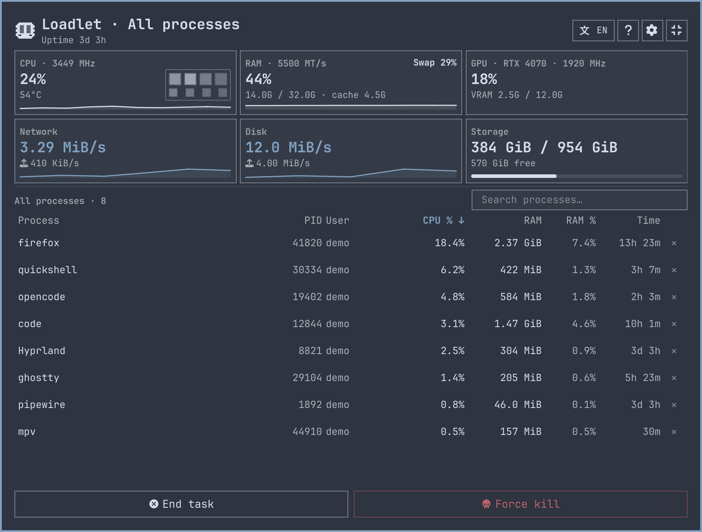
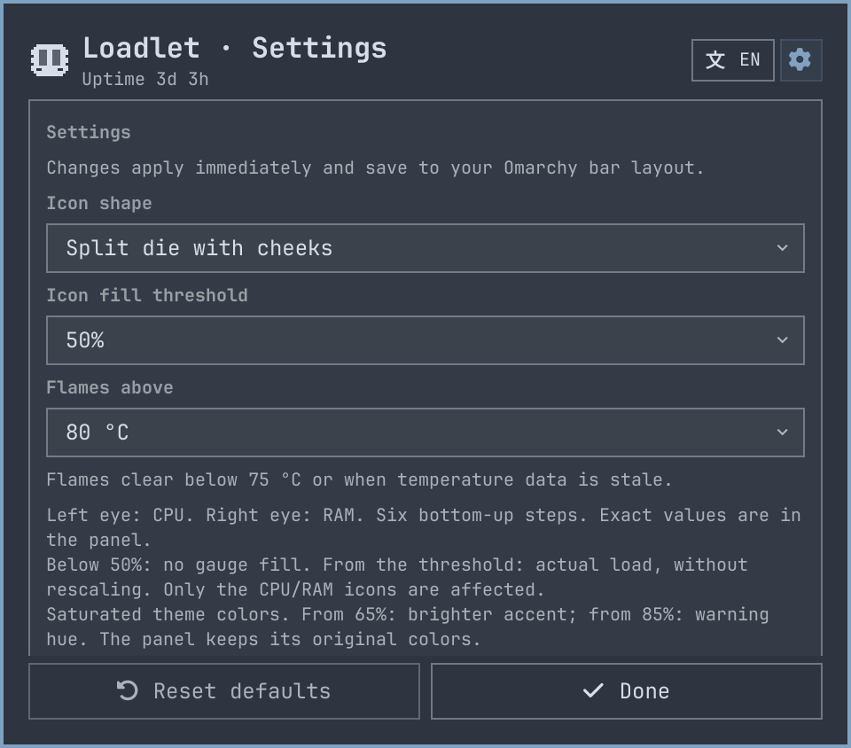

Native to Omarchy.
CPU on the left. RAM on the right.
Six rows. Two independent readings.

CPU 85% RAM 55%
Enlarged from actual QML
CPU, memory and active processes.
Sample values stay readable
even when the icon is quiet.

GPU and storage.
Process search.
The full sampled process list.

50% by default.
Below it: no fill.
At or above it: actual load.
No rescaling of the readings.

A native Omarchy system glance.
github.com/PavelLizunov/omarchy-loadlet
Based on Kristoffer Haugland's
Activity Monitor. MIT license.
Native QML renders. Demo data. Presentation motion, not a live recording.